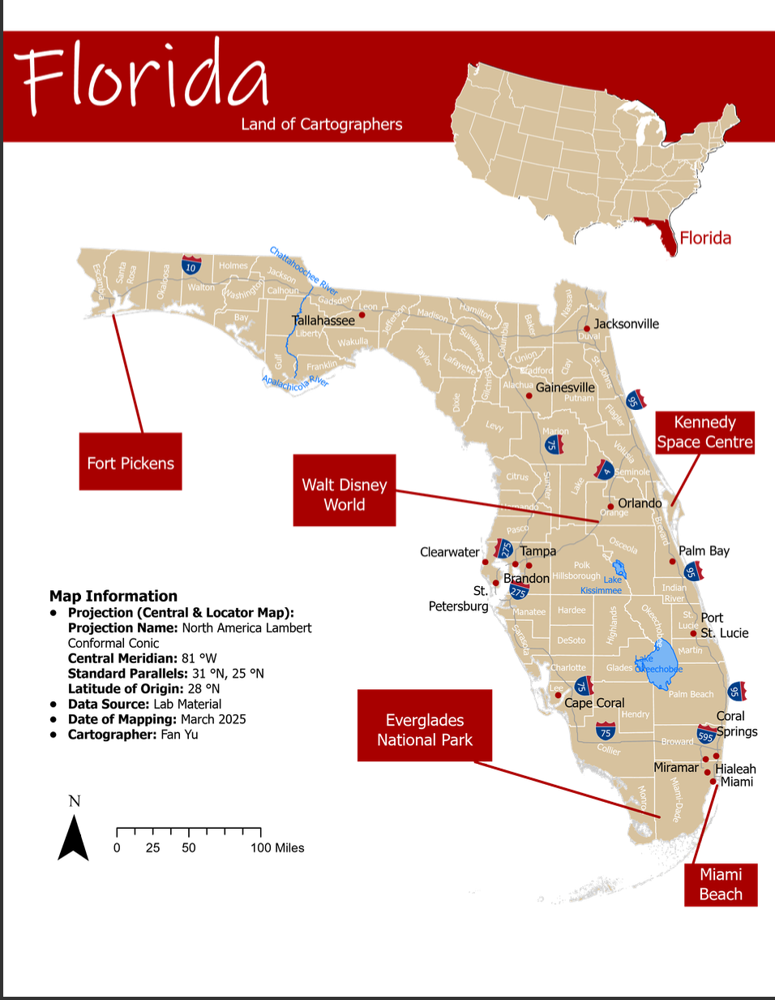
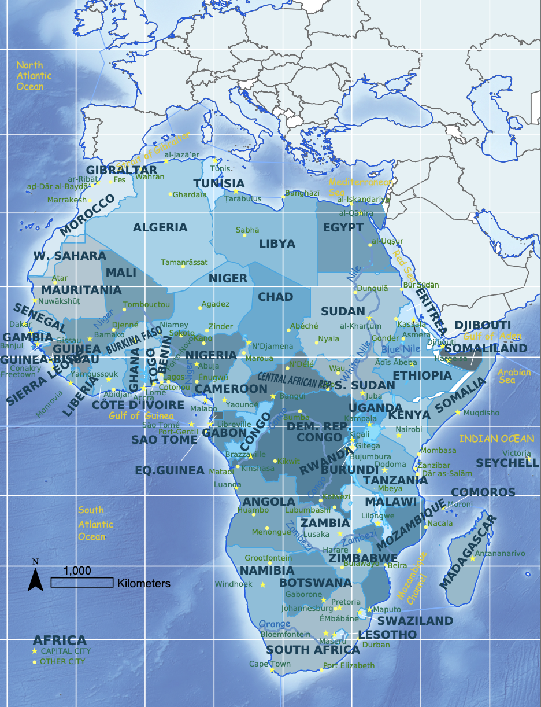
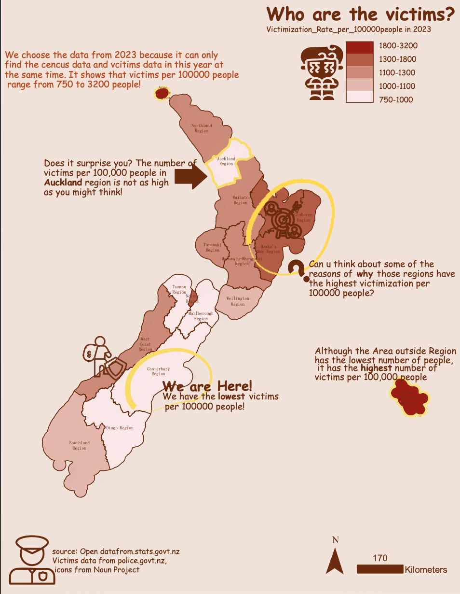

Celia Yu
Email: celiafanyu@gmail.com | Phone: 02885230081 | Christchurch, NZ
Professional Summary
Driven and detail-oriented intern seeking an entry-level Data Analyst role. Proficient in Excel, R, Python, ArcGIS Pro, Illustrator, and Tableau, with experience in SAR processing and a strong foundation in communication and analytical skills. Passionate about exploring cutting-edge models.
Experience
GIS Intern, University of Canterbury (Nov 2024 - Jan 2025)
- Used LiDAR data and SVM in ArcGIS Pro to map tree canopy cover for green space planning.
Business Analysis Volunteer, Domino's Pizza (Jun 2024 - Jul 2024)
- Visualized delivery patterns and customer flow to optimize staffing and efficiency.
- Created visual reports to identify popular products and reduce waste.
GIS Volunteer, Massey University (Dec 2023 - Mar 2024)
- Analyzed vineyard data and drone imagery to improve grapevine health and yield.
Data Audit Staff, Anling Biomedical Corp. (Jun 2023 - Aug 2023)
- Visualized drug evaluation data with Excel and Tableau.
- Audited experimental data for optimization insights.
Education
Master of Applied Data Science, University of Canterbury (2024 – 2025)
Courses include: Data Programming, Business Intelligence, Remote Sensing, Geovisual Analysis, and Statistical Learning.
Bachelor of Clinical Pharmacy, Harbin Medical University (2018 – 2023)
Courses include: Epidemiology, Pharmacology, Pharmaceutical Analysis, and Medical Statistics.
Skills
Excel, R, Python, ArcGIS Pro, Illustrator, Tableau, SAR processing
Interests
Hagley Parkrun, Gym, Tennis Club, Tramping
Projects & Portfolio

Florida Tourism Brochure (ArcGIS Pro)

Africa reference map (ArcGIS pro)

Choropleth Map of New Zealand Victimisations (ArcGIS pro)

Mapping the Tree Canopy Cover of University of Canterbury (ArcGIS pro)